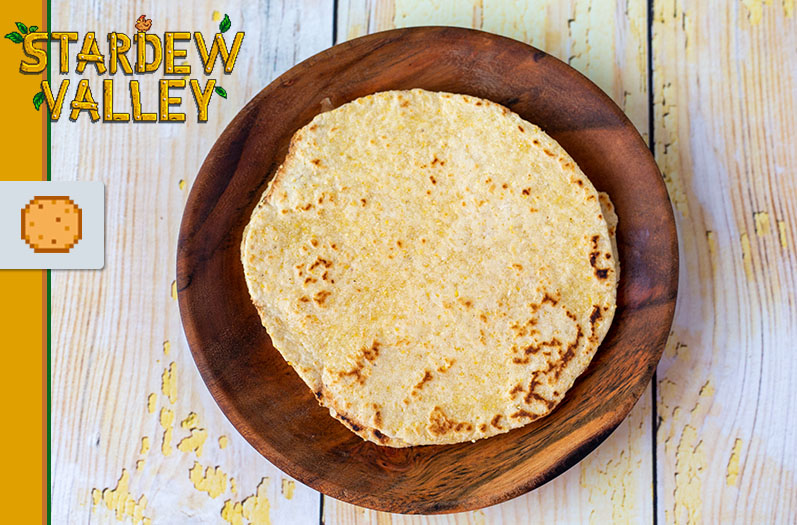

Stardew Valley: Tortilla

Comfort food for comfort gamers
Take it easy and make tortillas in a chill-out-war against boredom
Ingredients
- 2 Cups of all-purpose flour
- 1/2 Cups of corn meal
- 1 Tablespoon of baking powder
- 1 Tablespoon of salt
- 1 Tablespoon of garlic powder
- 1/4 Cups of unsalted butter (cubed)
- 3/4 cup of warm water
- 1 Tablespoon of canola oil
Steps
- Combine the flour, cornmeal, baking powder, salt, and garlic powder in a bowl. Add the cubed pieces of butter. Using your hands, combine the butter with the dry ingredients until it resembles coarse meal. Add the water and canola oil. Mix until combined. If the dough is feeling a bit too sticky, add additional flour.
- Transfer the dough to a floured countertop and knead until completely smooth. Divide into 12 equally portioned balls (mine were about 50 grams each). Cover with a damp paper towel and allow to rest for at least 30 minutes.
- When you are ready to make the tortillas, begin preheating a pan over high heat. Take a ball and place it on a floured countertop. Flatten the dough slightly with your hand. With a rolling pin, flatten the dough until it is nearly paper thin.
- Place the tortilla on the pan and cook on one side for about 1 minute, or until it begins to brown. Flip and cook again until it browns.
- This process is a quick one. I recommend rolling the dough out as you have a tortilla currently cooking. This will keep the dough from drying up while it waits to cook. If you are worried about timing, go ahead and roll two out before you start cooking so you give yourself a little buffer.
- Once all the tortillas are done you can enjoy them as you finish making them or store them in the refrigerator. Make sure they are completely sealed off with plastic wrap or an airtight container. Heat the tortillas up before eating them